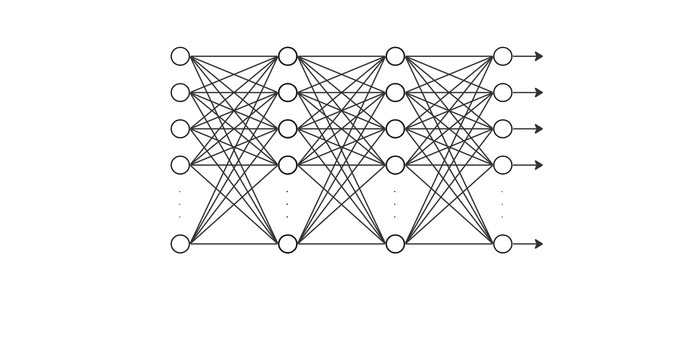
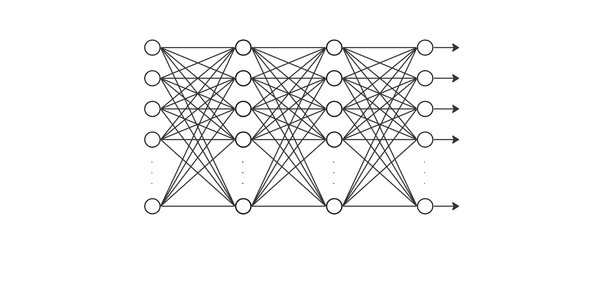
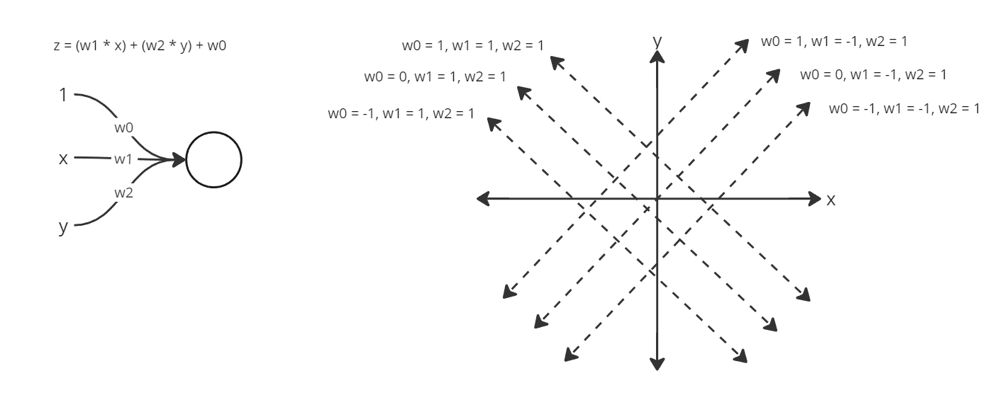

Neural Networks
Artificial neural networks are computing systems inspired by biology, specifically that of neuroscience and the study of the human nervous system.
The perceptron, the building block of these networks, developed alongside our understanding of the neuron, and many breakthroughs in the field
are layered atop breakthroughs in our understanding of the human nervous system. Thus, we will start not with the perceptron, but with the neuron, which
has an approximate structure as follows:
 The neuron consists of a soma (a cell body) that receives electrochemical signals from a set of dendrites (the branching observed around the soma)
and sends electrochemical signals down its axon (the large protrusion from the soma that is bundled by an insulating layer termed the myelin sheath)
to a set of end bulbs (also known as axon terminals or presynaptic terminals).
The neuron consists of a soma (a cell body) that receives electrochemical signals from a set of dendrites (the branching observed around the soma)
and sends electrochemical signals down its axon (the large protrusion from the soma that is bundled by an insulating layer termed the myelin sheath)
to a set of end bulbs (also known as axon terminals or presynaptic terminals).
Lets know look at the functionality of the neuron. Based on electrochemical changes in the dendrites, the neuron as a whole will either fire a
signal down the axon, or not. This is called the action potential. To understand the action potential it is first important to understand the synapse.
The synapse is the junction between two neurons where electrochemical signals are carried from one to the other. Specifically, an action potential
firing on the sending neuron triggers that neurons presynaptic terminals to secrete neurotransmitters into the synapse via exocytosis. These
neurotransmitters then bind to receptors on the postsynaptic terminals located on the dendrites of the receiving neuron:
 This binding action triggers ion channels to open and close in the postsynaptic membrane, thus changing the membrane potential (the difference
in electrochemical charge between the inside and outside of the cell membrane). If the membrane potential changes from its rest value of approximately -70mv
to -55mv, voltage-gated sodium channels open up and an action potential is triggered. There is a summation effect by a region in the soma called the
axon hillock, that sums up the electrochemical inputs of each dendritic branch. Consider that there exists an average of 1 voltage-gated sodium channel
per micrometre on the surface of the soma, but on the axon hillock this value rises to an average of 100-200 voltage-gated sodium channel per micrometre.
Binding of the neurotransmitter to the cell membrane may be excitatory or inhibitory, meaning it depolarises the neuron towards the threshold value, or
hyperpolarises the neuron away from the threshold value. Lets now look to the action potential itself...
This binding action triggers ion channels to open and close in the postsynaptic membrane, thus changing the membrane potential (the difference
in electrochemical charge between the inside and outside of the cell membrane). If the membrane potential changes from its rest value of approximately -70mv
to -55mv, voltage-gated sodium channels open up and an action potential is triggered. There is a summation effect by a region in the soma called the
axon hillock, that sums up the electrochemical inputs of each dendritic branch. Consider that there exists an average of 1 voltage-gated sodium channel
per micrometre on the surface of the soma, but on the axon hillock this value rises to an average of 100-200 voltage-gated sodium channel per micrometre.
Binding of the neurotransmitter to the cell membrane may be excitatory or inhibitory, meaning it depolarises the neuron towards the threshold value, or
hyperpolarises the neuron away from the threshold value. Lets now look to the action potential itself...
 ...and the chemical changes that underlie it.
...and the chemical changes that underlie it.

The resting potential of a neuron is the electric potential difference (the voltage) between the inside and outside of the neuron's cell membrane when the neuron is minimally transmitting electrochemical signals. The resting potential is established through the combined action of several factors. One is that of the presence of the sodium-potassium pump which is constantly using ATP energy to pump potassium ions into the cell and sodium ions out of the cell in a 3:2 ratio. This establishes an ionic concentration gradient and thus an electrochemical gradient across the membrane. Another is the permeability of intracellular and extracellular ions across the membrane. At rest, potassium ions have a higher permeability and thus 'leak out' of the intracellular fluid to a greater degree than sodium ions 'leak in'. This outflow of positive ions gives the intracellular fluid a greater negative value, as does the presence of other anions and organic compounds.
The action potential itself is initiated when the electrochemical changes resulting from postsynaptic binding elevates the resting potential above the threshold value. This triggers voltage-gated sodium channels to open, to overshoot, and thus for the polarity of the neuron to reverse (hypopolarization and depolarization). Lagging potassium channels then open up, overshoot, and again cause the polarity of the neuron to reverse (repolarization and hyperpolarization). The voltage peak of the action potential does not change. It is also important to note that voltage-gated sodium channels are closed during repolarization, so that only one action potential fires at a time. However, if excitatory electrochemical changes are signficant enough, the neuron may fire repeatedly. It is also important to note that "neurons that fire together wire together", meaning that across time it takes less electrochemical change for a presynaptic neuron to excite a postsynaptic neuron. The underlying process that causes such is still largely unkown, but is related to long-term potentiation and long-term depression.
Let us now look at the perceptron. The perceptron is the digital analog of the biological neuron and exists as a weighted graph wherein a single
node maps an input to an output. Edges are weighted to scale their inputs by some value, and nodes apply unique functions to define the mapping:
 The values \(a_1 ... a_n \) are the input activation values, which are each scaled by a corresponding weight in the set of weights \(w_1 ... w_n\).
A summation is made from all the weighted activations as well as a bias, which is subsequently run through an activation function that scales the
output in some way. Perhaps the simplest example of an activation function is that of the binary step function, which scales an input activation value
to either zero or one:
The values \(a_1 ... a_n \) are the input activation values, which are each scaled by a corresponding weight in the set of weights \(w_1 ... w_n\).
A summation is made from all the weighted activations as well as a bias, which is subsequently run through an activation function that scales the
output in some way. Perhaps the simplest example of an activation function is that of the binary step function, which scales an input activation value
to either zero or one:
 This activation function imitates the 'all or nothing' nature of action potentials. To draw further parallels to biology, the input activation values are like
the electrochemical charge of the postsynaptic terminal, the weight of the edges relates to the long-term potentiation (the sensitivity to input) of the
dendrites, and the summation of weighted edges parallels the effect of the axon hillock. When we build layers from perceptrons, we get a simple digital
nervous system, not unlike that of nervous tissue in biology:

This activation function imitates the 'all or nothing' nature of action potentials. To draw further parallels to biology, the input activation values are like
the electrochemical charge of the postsynaptic terminal, the weight of the edges relates to the long-term potentiation (the sensitivity to input) of the
dendrites, and the summation of weighted edges parallels the effect of the axon hillock. When we build layers from perceptrons, we get a simple digital
nervous system, not unlike that of nervous tissue in biology:

The output activation value of a single perceptron can be expressed mathematically as follows (\(i\) being the identifier of one of \(n\) input nodes, \(a_i\) being the activation of the input node, \(W_i\) being the applied weight, \(b\) being the applied bias, and finally \(σ\) being the applied activation function): \[ σ\left(\left(\sum_{i=1}^n a_iW_i\right) + b \right) \] This scales to a layer of perceptrons like so:
\[ σ\left( \begin{bmatrix} W_{0,0} & W_{1,0} & \dots & W_{n,0} \\ W_{0,1} & W_{1,1} & \dots & W_{n,1} \\ \vdots & \vdots & \ddots & \vdots \\ W_{0,n} & W_{1,n} & \dots & W_{n,n} \end{bmatrix} \begin{bmatrix} a_0 \\ a_1 \\ \vdots \\ a_n \end{bmatrix} + \begin{bmatrix} b_0 \\ b_1 \\ \vdots \\ b_n \end{bmatrix} \right) = \begin{bmatrix} o_0 \\ o_1 \\ \vdots \\ o_n \end{bmatrix} \]
The activation function itself varies from network to network (e.g. signum, linear, GeLU, leaky ReLU, Hyperbolic tangent, softmax, etc). Some of the most popular alternatives to the binary step function include the sigmoid function \[ σ(x) = \frac{1}{1+e^{-x}} \] and the ReLU function (rectified Linear Unit), \[ σ(x) = max(0, x) \]
We can think of a single perceptron as a linear classifier. Let us bring to mind a single perceptron with two inputs \(x\) and \(y\), two corresponding weights \(w_1\) and \(w_2\), and a bias \(w_0\). The input-output mapping of this particular perceptron can be mathematically expressed as \(z = w_1x + w_2y + w_0\) which is simply a line on a two-dimensional euclidean input plane:  A positive bias brings the line up and a negative bias brings the line down. The weight of x increases the gradient of the line with respect to x and the weight of y increases the gradient of the line with respect to y. Given that our inputs are the axes themselves, the inputs when expressed as vectors are linearly independent and \(n\) inputs expressed as vectors produce an \(n\)-dimensional space for which an \((n-1)\)-dimensional shape exists as the expression of the current set of weights (co-efficients). This shape will split the \(n\)-dimensional space in two just as the line splits our two-dimensional plane in two, thus classifying the set of all input values into two distinct sets. This is why we can perceive a perceptron as a linear classifier no matter how many inputs are given.
If we take a somewhat tangential step and make our inputs strictly boolean (still for the simple case of a perceptron with two inputs) then the parameters (weights and biases) can converge to that of simple boolean functions, like so: What is exciting about this is the observation that if a perceptron can implement NAND logic, then a set of layered perceptrons can implement the logic of any modern digital system, no matter how complex, given that the NAND gate is a universal logic gate (it can be used to build all others).